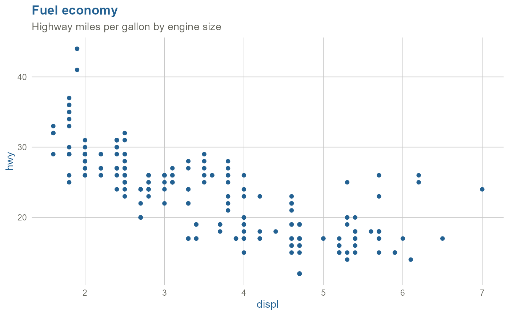

A minimal theme with bold CANHR blue titles, dark grey text and light grey
grid lines. Use it with scale_color_canhr() or scale_fill_canhr().
Examples
library(ggplot2)
ggplot(mpg, aes(displ, hwy)) +
geom_point(color = canhrcolors("blue")) +
labs(
title = "Fuel economy",
subtitle = "Highway miles per gallon by engine size"
) +
theme_canhr()
